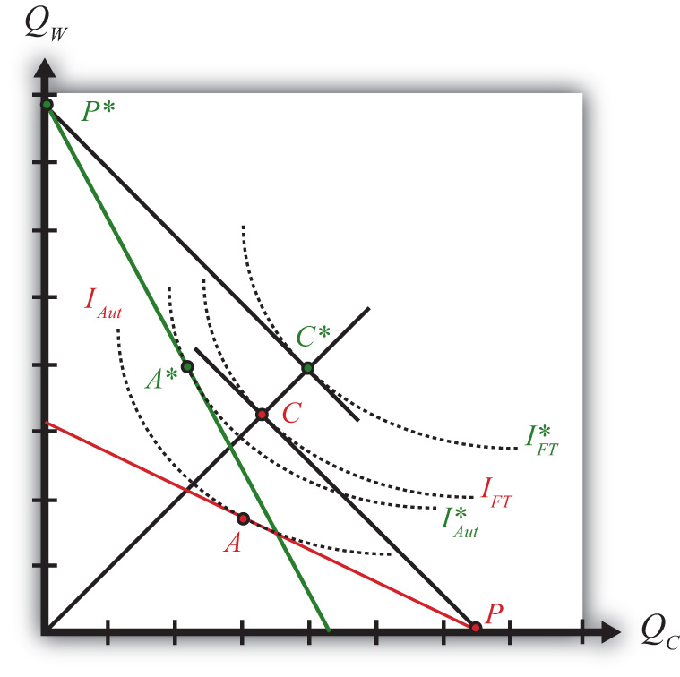

The second and more traditional method to evaluate the effects of free trade uses an aggregate welfare function to depict the overall welfare effects that would accrue to the nation. This method allows one to demonstrate the benefits that arise from increased production and consumption efficiency.
Figure 2.5 "Comparing Autarky and Free Trade Equilbriums" compares autarky and free trade equilibriums for the United States and France. The U.S. PPF is given by the red line, while France’s PPF is given by the green line. We assume both countries share the same aggregate preferences represented by the indifference curves in the diagram. Note also that if the United States and France had the same size labor force, then the relative positions of the PPFs imply that the United States has the absolute advantage in cheese production, while France has the absolute advantage in wine production. Also, if each country has an absolute advantage in one of the two goods, then each country must also have the comparative advantage in that good.
Figure 2.5 Comparing Autarky and Free Trade Equilbriums
The U.S. autarky production and consumption points are determined where the aggregate indifference curve is tangent to the U.S. PPF. This occurs at the red point A. The United States realizes a level of aggregate utility that corresponds to the indifference curve IAut.
The U.S. production and consumption points in free trade are at the red P and C, respectively. The United States specializes in production of its comparative advantage good but trades to achieve its consumption point at the red C. In free trade, the United States realizes a level of aggregate utility that corresponds to the indifference curve IFT. Since the free trade indifference curve IFT lies to the northeast of the autarky indifference curve IAut, national welfare rises as the United States moves to free trade.
France’s autarky production and consumption points are determined by finding the aggregate indifference curve that is tangent to the French PPF. This occurs at the green point A∗. France realizes a level of aggregate utility that corresponds to the indifference curve IAut∗.
French production and consumption points in free trade are the green P∗ and C∗, respectively. In free trade, France realizes a level of aggregate utility that corresponds to the indifference curve IFT∗. Since the free trade indifference curve IFT∗ lies to the northeast of the autarky indifference curve IAut∗, national welfare rises as France moves to free trade.